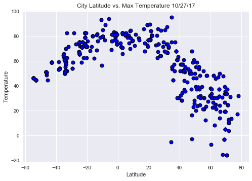

City Latitude vs. Max Temperature
The visualization displays the highest recorded temperature of each city and graphs them in a scatter plot based on each city's latitude. What we see is that as a latitiude moves farther and farther away from the equator, the temperature goes down. Peak temperatures occur between -20 and 20 degrees North and South of the equator.
